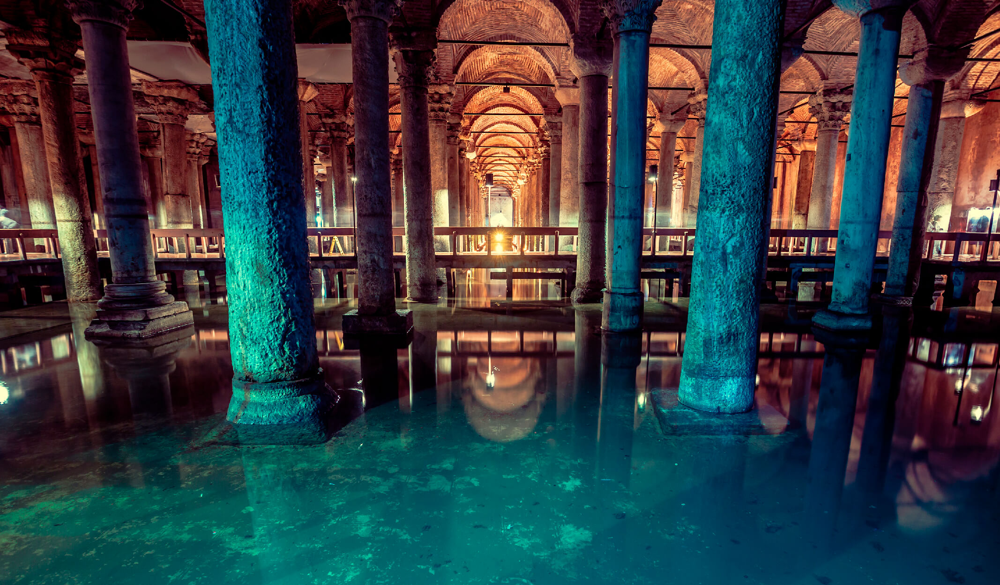
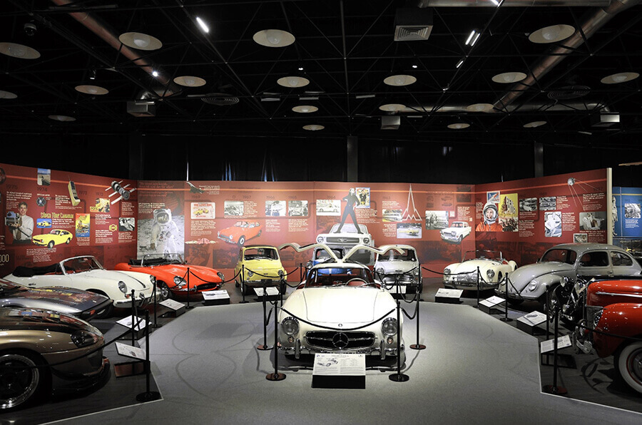

Adalar’da Bisiklet Turu

İstanbul’un kalabalığından ve gürültüsünden kaçmak isteyenler için
Adalar, huzurun ve doğanın kucakladığı bir kaçış noktası sunar.
Büyükada, Heybeliada, Burgazada ve Kınalıada, motorlu taşıtların yasak
olması nedeniyle bisikletle keşfetmek için mükemmel yerlerdir.
Adalar’da bisiklet sürmek, hem tarihi dokuyu yakından görme hem de
deniz havasını içinize çekme fırsatı verir.
Büyükada: Adaların En Büyüğü ve En Popüleri
Büyükada, İstanbul Adaları’nın en büyüğü ve en çok ziyaret edileni.
Bisiklet kiralayabileceğiniz birçok yer mevcut ve adayı dolaşmak
oldukça kolay. Aya Nikola Manastırı ve Aya Yorgi Kilisesi gibi tarihi
yerleri bisikletle gezmek mümkün. Özellikle Aya Yorgi’ye çıkan yokuş
biraz zorlu olabilir, ama zirveye ulaştığınızda karşılaştığınız
manzara tüm yorgunluğunuza değecek.
Bisiklet Kiralama ve İpuçları
Bisiklet Kiralama: Adaların vapur iskelesi yakınlarında birçok
bisiklet kiralama noktası bulunur. Fiyatlar genellikle saatlik olarak
belirlenir.
Güvenlik: Adalarda yollar genellikle sakin olsa da, özellikle
hafta sonları kalabalık olabileceği için dikkatli sürmekte fayda var.
Hazırlık: Yaz aylarında güneşten korunmak için şapka ve güneş
kremi almayı unutmayın. Ayrıca su şişenizi yanınızda bulundurmanız
önemli.
Balat - Renkli Evler

İstanbul’un en eski ve en otantik semtlerinden biri olan Balat,
Haliç’in güney kıyısında yer alır ve tarihi zenginliği ile dikkat
çeker. Tarihi boyunca birçok kültürün bir arada yaşadığı, farklı dini
ve etnik grupların izlerini taşıyan bu semt, şimdilerde nostaljik
atmosferi ve sanatsal havasıyla öne çıkıyor.
Balat’ın Tarihi Geçmişi
Balat, Bizans dönemine kadar uzanan bir tarihe sahiptir. Osmanlı
İmparatorluğu döneminde ise özellikle Yahudi, Rum ve Ermeni
toplumlarının yoğun olarak yaşadığı bir semt halini almıştır. Semtte
bulunan çok sayıda kilise, sinagog ve cami, Balat’ın kültürel
çeşitliliğini gözler önüne seriyor. Aynı zamanda Balat’ın yapıları,
Osmanlı döneminin mimari izlerini taşırken, dar sokaklar ve renkli
ahşap evler de semtin karakteristik özelliğini oluşturuyor.
Balat’ın Renkli Sokakları ve Evleri
Balat’ın en dikkat çekici özelliklerinden biri, eski İstanbul’un
ruhunu yansıtan sokakları ve evleridir. Zamanla restorasyondan geçse
de birçok yapının orijinal hali korunmuştur. Özellikle eski ahşap
yapılar, sararmış duvarlar ve rengarenk boyanmış evler, semtin
nostaljik havasını pekiştiriyor. Ziyaretçilerin fotoğraflar çekmekten
keyif aldığı Balat, İstanbul’un sokak sanatıyla da tanınan
semtlerinden biridir.
Pierre Loti Tepesi

Pierre Loti Tepesi, İstanbul’un en güzel manzaralarına sahip
yerlerinden biridir ve Haliç’e hakim bir konumda yer alır. Hem
tarihsel hem de doğal güzellikleriyle dikkat çeker. İsmini ünlü
Fransız yazar Pierre Loti’den alan bu tepe, özellikle romantik
atmosferi ve muazzam manzarasıyla ziyaretçilerine huzurlu bir kaçamak
sunar.
Pierre Loti Tepesi’nin Tarihi
Pierre Loti Tepesi, aslında adını, 19. yüzyılın sonlarına doğru
İstanbul’a sıkça gelen ve şehri çok seven ünlü Fransız yazar Pierre
Loti’den alır. Yazar, burada bir kafede oturup, Haliç’in muazzam
manzarasını seyrederken ilham alır ve bu manzaraya hayran kalır. Bu
yüzden, günümüzde tepeyi ve etrafını simgeleyen "Pierre Loti Tepesi"
ismi, onun İstanbul’a olan sevgisini simgeler.
Pierre Loti Tepesi’nin Özellikleri
Tepede bulunan Pierre Loti Kafesi, hem tarihi hem de doğal
güzellikleriyle ünlüdür. Kafe, özellikle manzarası ile bilinir ve
İstanbul’un en güzel köşe noktalarından birine sahiptir. Burada, hem
Haliç’in hem de İstanbul’un tarihi yarımadasının görkemli manzarası
izlenebilir. Ziyaretçiler, kafenin balkonunda çay veya kahve içerek,
şehri bir kuş bakışıyla izleyebilirler. Tepeden, özellikle sabahın
erken saatlerinde veya akşam güneşinin batışı sırasında muazzam
fotoğraflar çekmek mümkündür. Özellikle gün batımında, şehre bakan bir
yamaçta oturmak, huzurlu bir deneyim sunar.
Yerebatan Sarnıcı

Yerebatan Sarnıcı'nın Tarihi
Yerebatan Sarnıcı, Bizans İmparatoru I. Justinianus tarafından 532
yılında inşa edilmeye başlanmış, 537 yılında tamamlanmıştır. İnşası,
Bizans İmparatorluğu'nun İstanbul'daki su ihtiyacını karşılamak
amacıyla yapılmış, şehrin en büyük su deposu olma özelliği
taşımaktadır. İstanbul’un su ihtiyacı o dönemdeki geniş nüfus ve
sürekli büyüyen şehir için büyük bir sorun haline gelmişti. Bu sarnıç,
şehirdeki suyun depolanıp dağıtılması için oldukça önemli bir görev
üstlenmiştir. Sarnıcın inşa edilme süreci, dönemin mühendislik bilgisi
ve iş gücü açısından oldukça dikkat çekicidir. Yapımında, taşlar ve
mermerler, Roma İmparatorluğu'ndan getirilmiş ve muazzam büyüklükteki
kolonlar, yapının dayanıklılığını artırmıştır.
Yerebatan Sarnıcı'nın Mimari Özellikleri
Yerebatan Sarnıcı, büyüklüğü ve etkileyici yapısıyla göz kamaştırır.
İçerisi, toplamda yaklaşık 9.800 metrekarelik bir alanı kaplar ve 138
adet sütun ile desteklenir. Sütunlar, Bizans mühendisliğinin en önemli
örneklerinden birini temsil eder ve her biri yaklaşık 9 metre
yüksekliğindedir. Sarnıcın büyük alanı, tonlarca suyu depolayabilme
kapasitesine sahipti. Sarnıcın iç kısmı oldukça etkileyicidir ve
sarnıcın içinde dolaşırken, derin ve sessiz atmosferiyle büyüleyici
bir deneyim sunar. Zemininde yer alan su, sarnıcın bir zamanlar tam
kapasiteyle kullanıldığını gösterir. Ziyaretçiler, suyun üzerine
yansıyan ışıklar ve sütunların etrafındaki gizemli atmosferle adeta
bir zaman yolculuğuna çıkarlar.
Rahmi Koç Müzesi

Rahmi Koç Müzesi, İstanbul’un Hasköy semtinde yer alan, Türkiye’nin en
kapsamlı endüstri ve teknoloji müzelerinden biridir. Koç ailesinin
önemli bir üyesi olan Rahmi Koç’un öncülüğünde kurulan bu müze, hem
endüstri hem de ulaşım tarihine dair zengin bir koleksiyon sunar.
Rahmi Koç Müzesi'nin Tarihi ve Kuruluşu
Rahmi Koç Müzesi, Koç Holding'in onursal başkanı olan Rahmi Koç’un
öncülüğünde, endüstri ve ulaşım tarihini koruma ve gelecek nesillere
aktarma amacıyla kurulmuştur. Müze, 2005 yılında İstanbul’un Hasköy
semtinde yer alan tarihi bir fabrika binasında açılmıştır. Bu bina,
Osmanlı İmparatorluğu döneminden kalma, tarihi bir endüstriyel yapıdır
ve 19. yüzyılın sonlarından itibaren tekstil üretimi için
kullanılmıştır. Rahmi Koç, müzenin içeriğinde yer alan öğeleri,
yalnızca tarihsel değil, aynı zamanda kültürel açıdan da değerli
bulmuş ve bu öğeleri koruyarak geleceğe taşımak istemiştir.
Müzenin Koleksiyonu ve Sergilenen Eserler
Rahmi Koç Müzesi, çok geniş bir koleksiyona sahiptir. Müzede, çeşitli
endüstriyel makinelerden eski otomobillere, trenlerden denizaltılara
kadar pek çok farklı kategoride eserler sergilenmektedir. Bu eserler,
teknolojinin gelişimini ve Türkiye’nin endüstriyel geçmişini gözler
önüne serer.
Atatürk Arboretumu

Atatürk Arboretumu, İstanbul’un Sarıyer ilçesinde yer alan,
Türkiye’nin önemli botanik ve doğa koruma alanlarından biridir. 1949
yılında kurulan bu arboretum, adını Türkiye Cumhuriyeti'nin kurucusu
Mustafa Kemal Atatürk’ten almıştır. Doğanın korunması, bitki
çeşitliliğinin sağlanması ve botanik biliminin geliştirilmesi amacıyla
kurulan bu alan, hem bilimsel hem de doğal güzellikleriyle büyük bir
öneme sahiptir.
Atatürk Arboretumu’nun Tarihi
Atatürk Arboretumu'nun temelleri, 1949 yılında dönemin İstanbul
Üniversitesi Botanik Anabilim Dalı tarafından atılmıştır. Alan,
başlangıçta botanik çalışmaları yapmak amacıyla bir araştırma merkezi
olarak kurulmuştur. Yüksek eğitimde kullanılan bitki türlerinin
korunması ve tanıtılması hedeflenmiş, aynı zamanda bitki örtüsünün
çeşitlendirilmesi için çalışmalar yapılmıştır. Atatürk'ün botanik
bilimine olan ilgisi ve doğaya verdiği önem, bu arboretumun
kurulmasındaki ana etkenlerden biridir. 1982 yılında, arboretum
İstanbul Üniversitesi Orman Fakültesi’ne devredilmiştir ve 1995’te
halka açılmak üzere ziyaretçilere sunulmuştur.
Atatürk Arboretumu’nun Genel Özellikleri
Atatürk Arboretumu, yaklaşık 296 hektarlık bir alan üzerine kuruludur
ve çok sayıda yerli ve yabancı bitki türüne ev sahipliği yapmaktadır.
Bu geniş alan, ziyaretçilere doğa ile iç içe olma fırsatı sunarken
aynı zamanda eğitim ve araştırma amaçlı çalışmalar için de kullanılır.